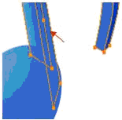
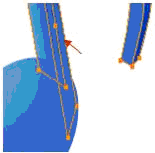
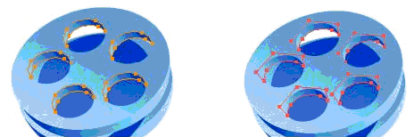
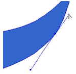

Figure:
Different size graphics
Reducing points
Removing unnecessary points is a way to optimize graphics as each point consumes ~20-40 bytes of memory. Actions to do this are:- Removing stacked points
- Removing points that have no visual impact
Simplify curved points
A curved line requires more time and CPU power to render than a straight line. Therefore utilizing straight lines whenever possible is preferable. Actions to do this are:- Covert hidden curved lines to straight lines
- Change visually indifferent curved lines to straight lines
- Retract unnecessary handles
 
Remove points that do not have any visual effect - point’s existence does not affect the shape’s outlook.

If an outline is hidden, it is recommended to simplify it by converting the relevant curved points to straight ones.
If a curved line can not be recognized, convert them into straight lines.

If a line is not needed to be curved on both sides of a point retract the handle that is on the straight line side.
Simplify shapes
Simplifying shapes by removing unnecessary details is another step for optimization graphics. Actions are:- Remove hidden shape details
- Combine shapes with similar fills
Demanding features
Gradient and opacity are relative demanding features for the SVG engine to render, especially when used in large areas. Optimization actions are:- Use gradients and opacity sparingly
- Combine shapes with same gradient
- Do not use overlapping transparency (opacity)